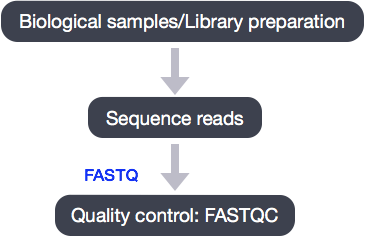
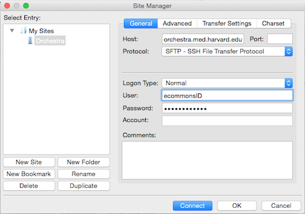

Learning Objectives:
- Evaluate the quality of your NGS data using FastQC
- Create and run a job submission script to automate quality assessment
Quality Control of FASTQ files

The first step in the RNA-Seq workflow is to take the FASTQ files received from the sequencing facility and assess the quality of the sequence reads.
Unmapped read data (FASTQ)
The FASTQ file format is the defacto file format for sequence reads generated from next-generation sequencing technologies. This file format evolved from FASTA in that it contains sequence data, but also contains quality information. Similar to FASTA, the FASTQ file begins with a header line. The difference is that the FASTQ header is denoted by a @ character. For a single record (sequence read) there are four lines, each of which are described below:
| Line | Description |
|---|---|
| 1 | Always begins with ‘@’ and then information about the read |
| 2 | The actual DNA sequence |
| 3 | Always begins with a ‘+’ and sometimes the same info in line 1 |
| 4 | Has a string of characters which represent the quality scores; must have same number of characters as line 2 |
Let’s use the following read as an example:
@HWI-ST330:304:H045HADXX:1:1101:1111:61397
CACTTGTAAGGGCAGGCCCCCTTCACCCTCCCGCTCCTGGGGGANNNNNNNNNNANNNCGAGGCCCTGGGGTAGAGGGNNNNNNNNNNNNNNGATCTTGG
+
@?@DDDDDDHHH?GH:?FCBGGB@C?DBEGIIIIAEF;FCGGI#########################################################
As mentioned previously, line 4 has characters encoding the quality of each nucleotide in the read. The legend below provides the mapping of quality scores (Phred-33) to the quality encoding characters. Different quality encoding scales exist (differing by offset in the ASCII table), but note the most commonly used one is fastqsanger.
Quality encoding: !"#$%&'()*+,-./0123456789:;<=>?@ABCDEFGHI
| | | | |
Quality score: 0........10........20........30........40
Using the quality encoding character legend, the first nucelotide in the read (C) is called with a quality score of 31 and our Ns are called with a score of 2. As you can tell by now, this is a bad read.
Each quality score represents the probability that the corresponding nucleotide call is incorrect. This quality score is logarithmically based and is calculated as:
Q = -10 x log10(P), where P is the probability that a base call is erroneous
These probabaility values are the results from the base calling algorithm and dependent on how much signal was captured for the base incorporation. The score values can be interpreted as follows:
| Phred Quality Score | Probability of incorrect base call | Base call accuracy |
|---|---|---|
| 10 | 1 in 10 | 90% |
| 20 | 1 in 100 | 99% |
| 30 | 1 in 1000 | 99.9% |
| 40 | 1 in 10,000 | 99.99% |
Therefore, for the first nucleotide in the read (C), there is less than a 1 in 1000 chance that the base was called incorrectly. Whereas, for the the end of the read there is greater than 50% probabaility that the base is called incorrectly.
Assessing quality with FastQC
Now we understand what information is stored in a FASTQ file, the next step is to examine quality metrics for our data.
FastQC provides a simple way to do some quality control checks on raw sequence data coming from high throughput sequencing pipelines. It provides a modular set of analyses which you can use to give a quick impression of whether your data has any problems of which you should be aware before doing any further analysis.
The main functions of FastQC are:
- Import of data from BAM, SAM or FastQ files (any variant)
- Providing a quick overview to tell you in which areas there may be problems
- Summary graphs and tables to quickly assess your data
- Export of results to an HTML based permanent report
- Offline operation to allow automated generation of reports without running the interactive application
Run FastQC
Before we run FastQC, let’s start an interactive session on the cluster (if you don’t already have one going):
$ srun --pty -p interactive -t 0-12:00 --mem 8G --reservation=HBC1 /bin/bash
An interactive session is very useful to test tools, workflows, run jobs that open new interactive windows (X11-forwarding) and so on.
Once your interactive job starts, notice that the command prompt has changed; this is because we are working on a compute node now, not on a login node. Change directories to raw_data.
$ cd ~/rnaseq/raw_data
Before we start using software, we have to load the environments for each software package. On the O2 cluster, this is done using an LMOD system.
If we check which modules we currently have loaded, we should not see FastQC.
$ module list
This is because the FastQC program is not in our $PATH (i.e. its not in a directory that unix will automatically check to run commands/programs).
$ echo $PATH
To run the FastQC program, we first need to load the appropriate module, so it puts the program into our path. To find the FastQC module to load we need to search the versions available:
$ module spider
Then we can load the FastQC module:
$ module load fastqc/0.11.3
Once a module for a tool is loaded, you have essentially made it directly available to you like any other basic UNIX command.
$ module list
$ echo $PATH
FastQC will accept multiple file names as input, so we can use the *.fq wildcard.
$ fastqc *.fq
Did you notice how each file was processed serially? How do we speed this up?
Exit the interactive session and start a new one with 6 cores, and use the multi-threading functionality of FastQC to run 6 jobs at once.
$ exit #exit the current interactive session
$ srun --pty -n 6 -p interactive -t 0-12:00 --mem 8G --reservation=HBC1 /bin/bash #start a new one with 6 cpus (-n 6) and 8G RAM (--mem 8G)
$ module load fastqc/0.11.3 #reload the module for the new session
$ cd ~/rnaseq/raw_data
$ fastqc -t 6 *.fq #note the extra parameter we specified for 6 threads
How did I know about the -t argument for FastQC?
$ fastqc --help
Now, let’s create a home for our results
$ mkdir ~/rnaseq/results/fastqc
…and move them there (recall, we are still in ~/rnaseq/raw_data/)
$ mv *fastqc* ~/rnaseq/results/fastqc/
Performing quality assessment using job submission scripts
So far in our FASTQC analysis, we have been directly submitting commands to O2 using an interactive session (ie. srun --pty -n 6 -p short -t 0-12:00 --mem 8G bash). However, there are many more partitions available on O2 than just the interactive partition. We can submit commands or series of commands to these partitions using job submission scripts.
Job submission scripts for O2 are just regular scripts, but contain the O2 options/directives for job submission, such as number of cores, name of partition, runtime limit, etc. We can submit these scripts to whichever partition we specify in the script using the sbatch command as follows:
# DO NOT RUN THIS
$ sbatch job_submission_script.run
Submission of the script using the sbatch command allows SLURM to run your job when its your turn. Let’s create a job submission script to load the FASTQC module, run FASTQC on all of our fastq files, and move the files to the appropriate directory.
Change directories to ~/rnaseq/scripts, and create a script named mov10_fastqc.run using vim.
$ cd ~/rnaseq/scripts
$ vim mov10_fastqc.run
The first thing we need in our script is the shebang line:
#!/bin/bash
Following the shebang line are the O2 options. For the script to run, we need to include options for queue/partition (-p) and runtime limit (-t). To specify our options, we precede the option with #SBATCH, which tells O2 that the line contains options for job submission to SLURM.
#SBATCH -p short # partition name
#SBATCH -t 0-2:00 # hours:minutes runlimit after which job will be killed
#SBATCH -n 6 # number of cores requested -- this needs to be greater than or equal to the number of cores you plan to use to run your job
#SBATCH --job-name rnaseq_mov10_fastqc # Job name
#SBATCH -o %j.out # File to which standard out will be written
#SBATCH -e %j.err # File to which standard err will be written
Now in the body of the script, we can include any commands we want run:
## Changing directories to where the fastq files are located
cd ~/rnaseq/raw_data
## Loading modules required for script commands
module load fastqc/0.11.3
## Running FASTQC
fastqc -t 6 *.fq
## Moving files to our results directory
mv *fastqc* ../results/fastqc/
Save and quit the script. Now, let’s submit the job to the SLURM:
$ sbatch mov10_fastqc.run
You can check on the status of your job with:
$ sacct
$ ls -lh ../results/fastqc/
There should also be standard error (.err) and standard out (.out) files from the job listed in ~/rnaseq/scripts. You can move these over to your logs directory and give them more intuitive names:
$ mv *.err ../logs/fastqc.err
$ mv *.out ../logs/fastqc.out
Exercise
How would you change the mov10_fastqc.run script if you had 9 fastq files you wanted to run in parallel.
FastQC Results
Let’s take a closer look at the files generated by FastQC:
$ ls -lh ~/rnaseq/results/fastqc/
HTML reports
The .html files contain the final reports generated by fastqc, let’s take a closer look at them. Transfer the file for Mov10_oe_1.subset.fq over to your laptop via FileZilla.
Filezilla - Step 1
Open FileZilla, and click on the File tab. Choose ‘Site Manager’.

Filezilla - Step 2
Within the ‘Site Manager’ window, do the following:
- Click on ‘New Site’, and name it something intuitive (e.g. O2)
- Host: transfer.rc.hms.harvard.edu
- Protocol: SFTP - SSH File Transfer Protocol
- Logon Type: Normal
- User: ECommons ID
- Password: ECommons password
- Click ‘Connect’

FastQC is just an indicator of what’s going on with your data, don’t take the “PASS”es and “FAIL”s too seriously.
FastQC has a really well documented manual page with more details about all the plots in the report. We recommend looking at this post for more information on what bad plots look like and what they mean for your data.
We also have a slidedeck of error profiles for Illumina sequencing, where we discuss specific FASTQC plots and possible sources of these types of errors.
Below are two of the most important analysis modules in FastQC, the “Per base sequence quality” plot and the “Overrepresented sequences” table.
The “Per base sequence quality” plot provides the distribution of quality scores across all bases at each position in the reads.

The “Overrepresented sequences” table displays the sequences (at least 20 bp) that occur in more than 0.1% of the total number of sequences. This table aids in identifying contamination, such as vector or adapter sequences.

We will go over the remaining plots in class. Remember, our report only represents a subset of reads (chromosome 1) for Mov10_oe_1.subset.fq, which can skew the QC results. We encourage you to look at the full set of reads and note how the QC results differ when using the entire dataset.
NOTE: The other output of FastQC is a .zip file. These .zip files need to be unpacked with the
unzipprogram. If we try tounzipthem all at once:$ cd ~/rnaseq/results/fastqc/ $ unzip *.zipDid it work?
No, because
unzipexpects to get only one zip file. Welcome to the real world. We could do each file, one by one, but what if we have 500 files? There is a smarter way. We can save time by using a simple shellfor loopto iterate through the list of files in *.zip.After you type the first line, you will get a special ‘>’ prompt to type next lines.
You start with ‘do’, then enter your commands, then end with ‘done’ to execute the loop.Note that in the first line, we create a variable named
zip. After that, we call that variable with the syntax$zip.$zipis assigned the value of each item (file) in the list *.zip, once for each iteration of the loop.This loop is basically a simple program. When it runs
$ for zip in *.zip do unzip $zip doneThis will run unzip once for each file (whose name is stored in the $zip variable). The contents of each file will be unpacked into a separate directory by the unzip program.
The ‘for loop’ is interpreted as a multipart command. If you press the up arrow on your keyboard to recall the command, it will be shown like so:
for zip in *.zip; do unzip $zip; doneWhen you check your history later, it will help you remember what you did!
What information is contained in the unzipped folder?
$ ls -lh Mov10_oe_1.subset_fastqc $ head Mov10_oe_1.subset_fastqc/summary.txtTo save a record, let’s
catallfastqc summary.txtfiles into onefull_report.txtand move this to~/rnaseq/docs. You can use wildcards in paths as well as file names. Do you remember how we saidcatis really meant for concatenating text files?$ cat */summary.txt > ~/rnaseq/logs/fastqc_summaries.txt
Quality Control (Optional) - Trimming
We want to make sure that as many reads as possible map or align accurately to the genome. To ensure accuracy, only a small number of mismatches between the read sequence and the genome sequence are allowed, and any read with more than a few mismatches will be marked as being unaligned.
Therefore, to make sure that all the reads in the dataset have a chance to map/align to the genome, unwanted information can be trimmed off from every read, one read at a time. The types of unwanted information can include one or more of the following:
- leftover adapter sequences
- known contaminants (strings of As/Ts, other sequences)
- poor quality bases at read ends
We will not be performing this step because:
- our data does not have an appreciable amount of leftover adapter sequences or other contaminating sequences based on FastQC.
- the alignment tool we have picked (STAR) is able to account for low-quality bases at the ends of reads when matching them to the genome.
If you need to perform trimming on your fastq data to remove unwanted sequences/bases, the recommended tool is cutadapt.
Example of cutadapt usage:
$ cutadapt --adapter=AGATCGGAAGAG --minimum-length=25 -o myfile_trimmed.fastq.gz myfile.fastq.gz
After trimming, cutadapt can remove any reads that are too short to ensure that you do not get spurious mapping of very short sequences to multiple locations on the genome. In addition to adapter trimming, cutadapt can trim off any low-quality bases too, but please note that quality-based trimming is not considered best practice, since majority of the newer, recommended alignment tools can account for this.
This lesson has been developed by members of the teaching team at the Harvard Chan Bioinformatics Core (HBC). These are open access materials distributed under the terms of the Creative Commons Attribution license (CC BY 4.0), which permits unrestricted use, distribution, and reproduction in any medium, provided the original author and source are credited.
- The materials used in this lesson was derived from work that is Copyright © Data Carpentry (http://datacarpentry.org/). All Data Carpentry instructional material is made available under the Creative Commons Attribution license (CC BY 4.0).